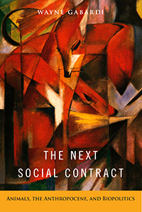

<body bgcolor="#FFFFFF" text="#000000" link="#0000FF" vlink="#CC0000" alink="#CC0000"><center><hr width="350" size="1" align="center" noshade>A comprehensive, interdisciplinary analysis of the fate of animals in the twenty-first century Anthropocene era<hr width="350" size="1" align="center" noshade><p><a href="https://cdcshoppingcart.uchicago.edu/Cart/ChicagoBook.aspx?ISBN=&&PRESS=temple" target="_top">Buy this book!</a> | <a href="https://cdcshoppingcart.uchicago.edu/Cart/Cart.aspx?PRESS=temple" target="_top">View Cart</a> | <a href="https://cdcshoppingcart.uchicago.edu/Cart/Cart.aspx?PRESS=temple" target="_top">Check Out</a></p><p></p></center><!--none//--><h1 class = "booktitle">The Next Social Contract</h1> <h1 class = "subtitle">Animals, the Anthropocene, and Biopolitics</h1>
<h3>Wayne Gabardi </h3>
paper: $34.95, Jun 17<BR>EAN:&nbsp;978-1-4399-1412-0<BR><font color=#990033>Not Yet Published Preorder</FONT><font size=-7><br>&nbsp;</font></p><p class="info">cloth: $89.50, <BR>EAN:&nbsp;978-1-4399-1411-3<BR><font color=#990033>Not Yet Published Preorder</FONT><font size=-7><br>&nbsp;</font></p><p class="info">e-book: $34.95, <BR>EAN:&nbsp;978-1-4399-1413-7<BR><font color=#990033>Not Yet Published Preorder</FONT><font size=-7><br>&nbsp;</font></p></p></td></tr></table>
<BR> <p class="info">242 pp<BR> 6 x 9<BR> <p class="info"><font size=-7>&nbsp;</font></p><p class="info">
</P><BLOCKQUOTE><p>
"<i>We are living in an epoch called 'The Age of Humanity.' I prefer to call it 'The Rage of Inhumanity,' and Wayne&nbsp;Gabardi&nbsp;provides numerous good reasons for this re-envisioning of the Anthropocene. In his wide-ranging, interdisciplinary, and forward-looking book, Gabardi&nbsp;considers the fate of nonhuman animals in the twenty-first century, who are wantonly used and abused by the billions daily and globally by humans in all sorts of venues. He convincingly argues for a new ethic-a new social contract-in which nonhumans and humans compete on more even terrain, where the interests of nonhumans are not routinely and thoughtlessly trumped, often brutally, in favor of the interests of humans. I only hope that this cultural shift is not too far off, because we simply cannot continue subjecting other animals to unfettered violence 'in the name of humans.'&nbsp;</i>The Next Social Contract<i>&nbsp;is a provocative book that deserves a broad and global audience.</i>"
<br />-<b>Marc Bekoff,</b> author of&nbsp;<i>Rewilding Our Hearts: Building Pathways of Compassion and Coexistence&nbsp;</i>and<i>&nbsp;</i>co-author of <i>The Animals' Agenda: Freedom, Compassion, and Coexistence in the Human Age</i>
<br></BLOCKQUOTE>
<p>
In his provocative book <i>The Next Social Contract, </i>Wayne Gabardi rigorously considers the fate of animals in the twenty-first century. He claims that if we are to address the challenges raised by the Anthropocene-the period where nonhuman beings tend to be mere extras, often subsumed under the umbrella notion of "nature"-we need to radically rethink our basic ethical outlook and develop a new, "more-than-human" social contract.<br>
<p>Gabardi's wide-ranging and multidisciplinary analysis focuses on four principal battlegrounds of animal biopolitics in the twenty first century: the extinction of wild animals, the crisis of oceanic animals, industrialized farm animals and the future of industrial agribusiness, and the situation of contact-zone animals moving into human-occupied habitats. <br>
<p>In his recasting of the social contract, Gabardi envisions a culture shift in human-animal relations toward posthumanism that features the ethical and political prioritization of animal life so it is on par with that of human well-being.
<br>
<P CLASS="top"><A HREF="#top">BACK TO TOP</A></P>&nbsp;
<BR>&nbsp;
<h2 class="inpageheading"><A NAME="reviews"></a>Reviews</h2>
<p>
<i>"Wayne&nbsp;Gabardi&nbsp;seeks to expand the scope of animal studies to include a wide variety of problems that are often overlooked. Among the chief merits of</i> The Next Social Contract<i> are Gabardi's wise focus on a broad range of human-animal relationships and his efforts to ground ethics in a rich, coevolutionary context.&nbsp;To build his argument, Gabardi&nbsp;marshals an impressive number of thinkers, texts, and traditions-from biology and ecology to analytic and continental philosophy. This synthetic approach represents the very best kind of work in the interdisciplinary field of animal studies. </i>The Next Social Contract<i> makes an essential contribution to the discipline."
<br /></i>-<b>Matthew Calarco</b>, Professor at California State University, Fullerton, and author of <i>Thinking Through Animals: Identity, Difference, Indistinction</i>
<br>
<P CLASS="top"><A HREF="#top">BACK TO TOP</A></P>&nbsp;<P>
</P><BR>&nbsp;
<H2 class="inpageheading"><A NAME="author bio"></a>About the Author(s)</H2><p>
<b>Wayne Gabardi </b>is Professor of Political Theory and Honors Program Faculty at Idaho State University. He is the author of <i>Negotiating Postmodernism</i>.
<br>
<P CLASS="top"><A HREF="#top">BACK TO TOP</A></P>
<p><h2 class="inpageheading"><a name="subjects"></a>Subject Categories</h2> <p><a href="http://www.temple.edu/tempress/animal_soc.html" target="_top">Animals and Society</a> <br><a href="http://www.temple.edu/tempress/philosophy.html" target="_top">Philosophy and Ethics</a> <br><a href="http://www.temple.edu/tempress/nature.html" target="_top">Nature and the Environment</a> <br><a href="" target="_top"></a> <br><a href="" target="_top"></a> </p>
</p>
<P>
</P>
<p align="center"><a href="https://cdcshoppingcart.uchicago.edu/Cart/ChicagoBook.aspx?ISBN=&&PRESS=temple" target="_top">Buy this book!</a> | <a href="https://cdcshoppingcart.uchicago.edu/Cart/Cart.aspx?PRESS=temple" target="_top">View Cart</a> | <a href="https://cdcshoppingcart.uchicago.edu/Cart/Cart.aspx?PRESS=temple" target="_top">Check Out</a></p><p><font face="Arial" size="1"><a href="copyright.html" onMouseOver="window.status='Web Copyright Policy';return true;" onMouseOut="window.status=''" title="Web Copyright Policy">&copy;</a> 2017 <a href="http://www.temple.edu" target="new" onMouseOver="window.status='Link to Temple University home page';return true;" onMouseOut="window.status=''" title="Link to Temple University home page">Temple University</a>. All Rights Reserved. http://www.temple.edu/tempress/titles/2425_reg.html</font></p>